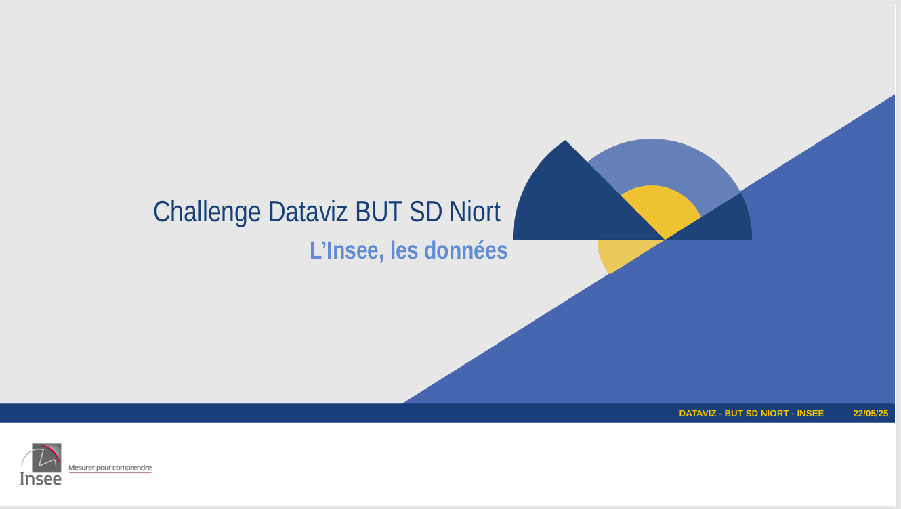

Concour Dataviz
En vue du concours annuel de Dataviz organisé par les étudiants du BUT Science des données. On nous a chargé d'analyser la tranche d'âge de 15 à 25 ans et de mener cette étude en s'appuyant sur les jeux de données fournis par l'INSEE.
Technologies employées : Power BI & Excel & Python
Compétences :